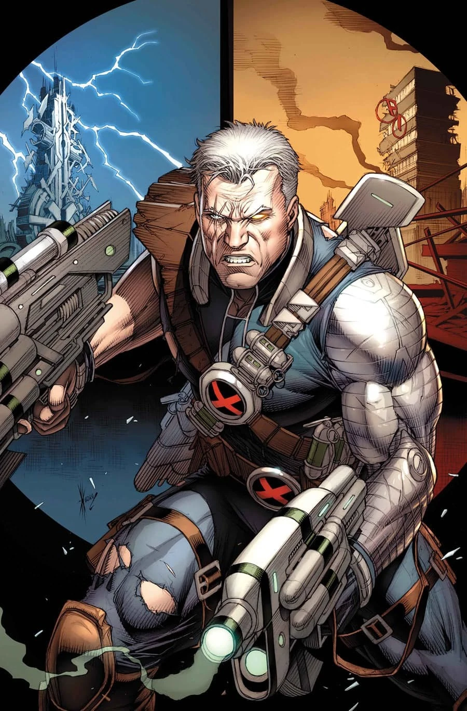
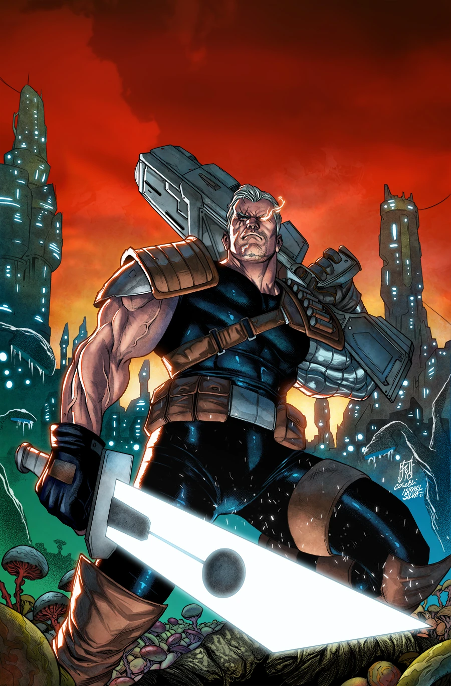

Cable
Alter ego: Nathan Christopher Charles Summers
Species: Human mutant
Place of Origin: New York City, United States (Earth-616)
Team Affiliations: X-Men, Avengers, X-Force, Askani, Six Pack, The Twelve, New Mutants, Avengers Unity Division, S.W.O.R.D., The Underground, Swordbearers of Krakoa
Partnerships: Domino, Rachel Summers, Deadpool, Hope Summers

Notable Aliases: Nathan Winters, Nathan Dayspring, Askani'son, Soldier X, Chosen One, Traveler, Kid Cable (Nate Summers)
Abilities: Telekinesis; Telepathy; Expert marksman and hand-to-hand combatant; Cybernetic enhancements grant superhuman strength and durability; enhanced, multi-spectrum vision; and the ability to interface with technology; Teleportation